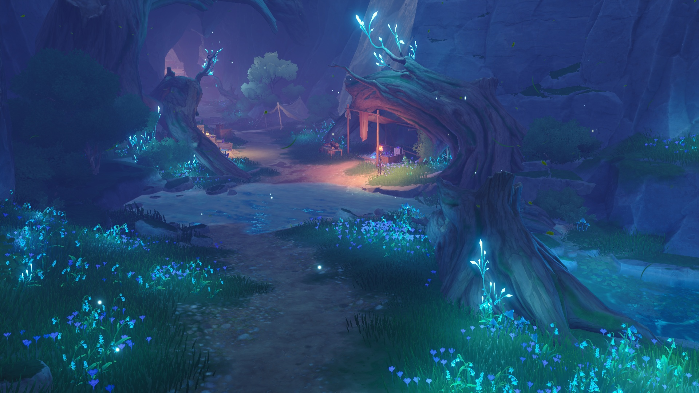
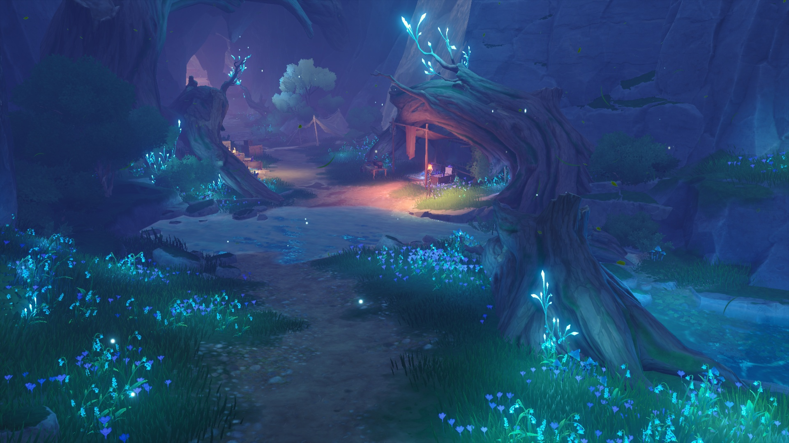
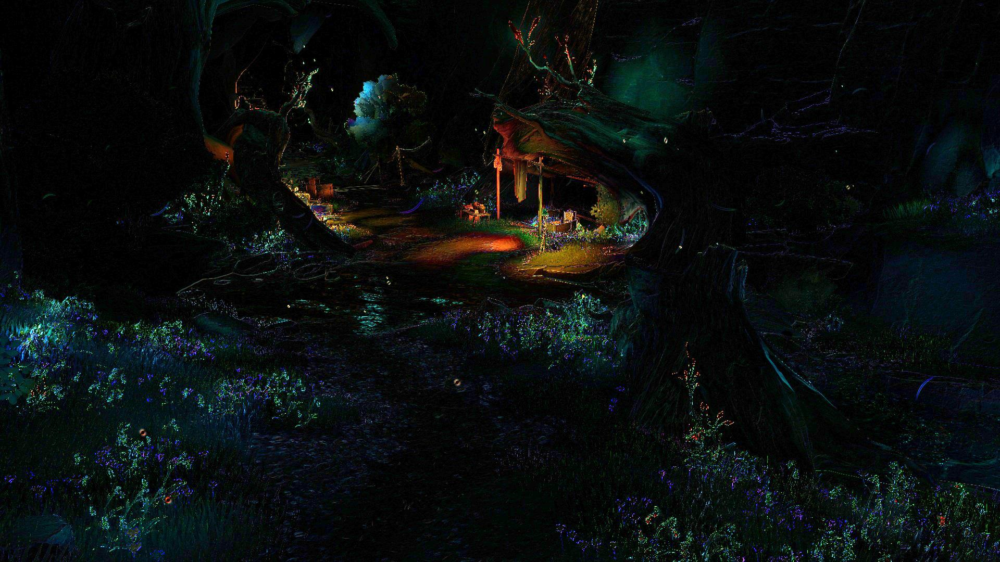
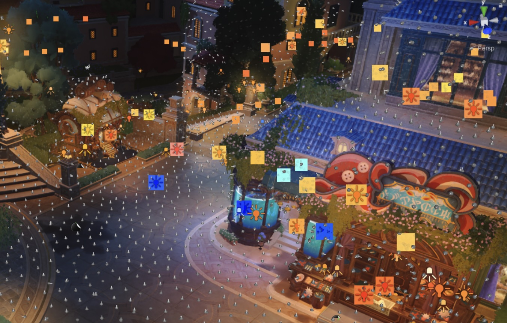
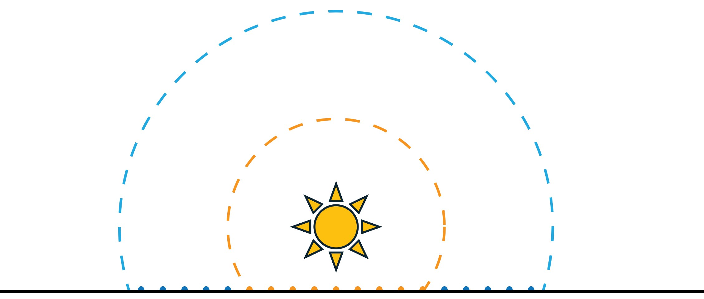
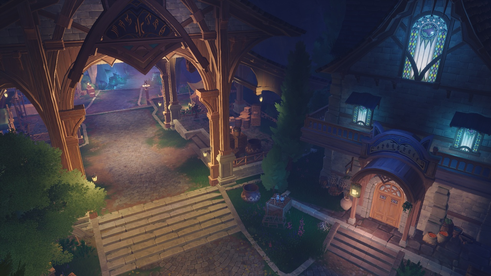
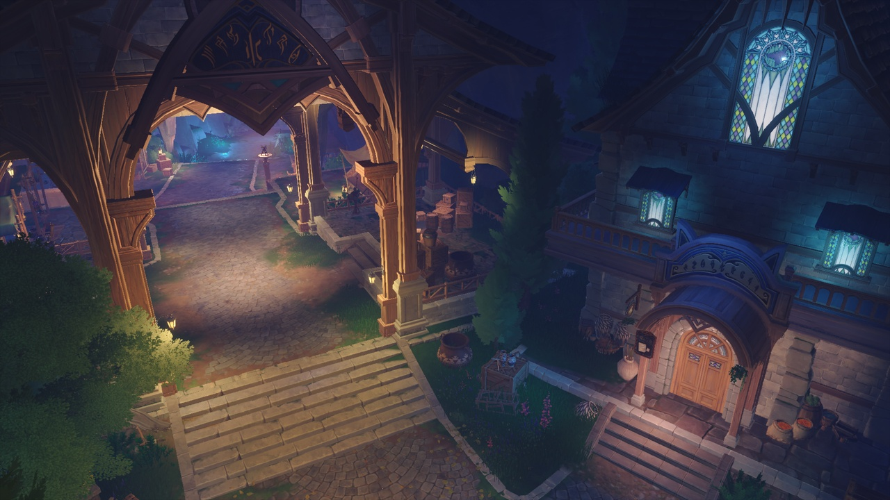

LightOpt: Lights Optimization for Real-time Rendering
A differentiable lighting optimization pipeline that reduces active lights in real-time game scenes while preserving the rendered appearance.



LightOpt reduces the Valley scene from 121 to 57 lights while preserving appearance, reducing average light overdraw from 2.40 to 1.67 in this view.
Abstract
Modern game scenes often require hundreds of lights to achieve rich visual detail, yet evaluating many lights per pixel remains a major performance bottleneck in real-time rendering, especially on low-end platforms. We present a differentiable lighting optimization pipeline that automatically reduces the number of active lights while preserving the final rendered appearance. Our method jointly optimizes light parameters and dynamically performs light removal, merging, and insertion during optimization. We introduce two loss functions to minimize redundant light overlap and prevent under-illumination, and extend our approach to support Time-of-Day lighting. Experiments on production game scenes show that our method reduces lighting cost by 18–52% while consistently outperforming artist-authored light reductions in visual fidelity.
Overview Video
The project video summarizes the motivation, pipeline, and rendering results of LightOpt.
Method Overview
LightOpt optimizes lights as a preprocessing step and can be integrated into existing tiled, clustered, or tiled-Z rendering pipelines.
Irradiance-field target
Surface samples are drawn from the scene, and the original irradiance field is used as a view-independent optimization target.
Overlap and attraction losses
The overlap loss discourages redundant light coverage, while the attraction loss pulls nearby lights toward under-lit regions.
Dynamic light controller
LightOpt alternates differentiable parameter optimization with light removal, merging, and insertion to adapt the light set.


Results
LightOpt is evaluated on production game scenes with indoor, outdoor, and Time-of-Day lighting setups.

Cave input
Cave oursHighlights
Across five real scenes, LightOpt consistently lowers average light overdraw and deferred shading time while preserving illumination. The method also outperforms an industrial view-dependent light-pruning baseline in both speed and visual fidelity.
Tiled-Z rendering Deferred shading Time-of-Day
| Scene | Input lights | Ours lights | Mean ALO ↓ | Mean shading ↓ | Mean RMSE ↓ | Mean speedup |
|---|---|---|---|---|---|---|
| Valley | 121 | 57 | 5.78 → 2.54 | 0.95 → 0.57 ms | 0.046 | 1.67× |
| Tavern | 210 | 126 | 3.35 → 1.72 | 0.71 → 0.52 ms | 0.041 | 1.37× |
| Square ToD | 314 | 249 | 3.28 → 1.57 | 0.83 → 0.56 ms | 0.043 | 1.48× |
| Cave | 80 | 64 | 3.43 → 2.05 | 0.71 → 0.49 ms | 0.037 | 1.45× |
| Street | 135 | 95 | 3.83 → 1.68 | 0.67 → 0.45 ms | 0.033 | 1.49× |
Citation
If you find this work useful, please cite the paper.
@inproceedings{chen2026lightopt,
title = {LightOpt: Lights Optimization for Real-time Rendering},
author = {Chen, Tuo and Cao, Luyan and Wu, Kui and Hu, Shimin},
booktitle = {SIGGRAPH Conference Papers '26},
year = {2026}
}